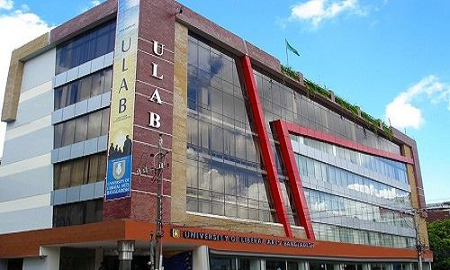

University Of Liberal Arts Bnagladesh

University of Liberal Arts Bangladesh (ULAB) is a private liberal arts-based University in Bangladesh. I t was Founded in February 2002. I am studying in this university in CSE major. I was atmitted in 2015 in Fall semester.
- I am currently in 10th semester.
- My CGPA is 3.85
- I was the winner in programming competition in CSE Tech Fest 2016.
- I was the executive member of UCPC(ULAB Computer Programming Club).
- I was associated with ULAB Nutrition Club.
- Worked at ULAB Shangskriti Shangshad.